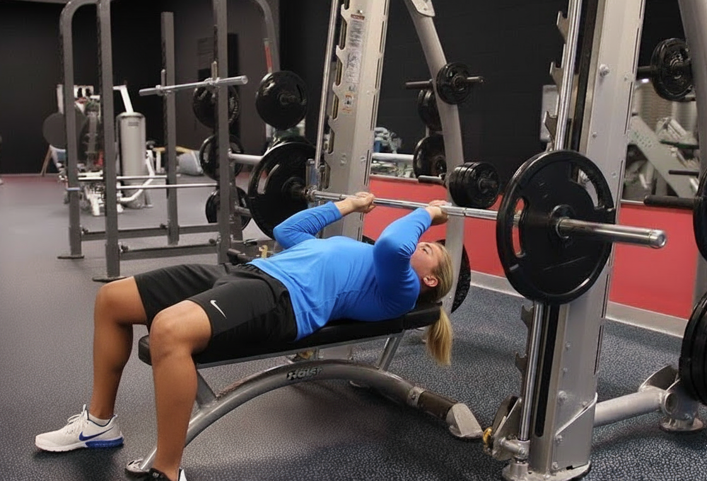

Extension de Tricep en Polea Alta
Un ejercicio esencial para el tricep.
Aqui podras encontrar como debes hacer este ejercicio.
Extension de Tricep por Encima de la Cabeza

Una forma unica y necesaria para entrenar tu tricep.
Aqui podras encontrar como debes hacer este ejercicio.
Rompe Craneos
Destruye tus tricep como lo hacia la vieja escuela.
Aqui podras encontrar como debes hacer este ejercicio.
JM Press
Ejercicio unico y preciso, donde lograras sentir tu tricep arder.
Aqui podras encontrar como debes hacer este ejercicio.
Fondos en maquina
Gran alternativa a los fondos libres, ofreciendo un control y estabilidad optimo para el tricep. Ideal para principiantes.
Aqui podras encontrar como debes hacer este ejercicio.